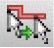
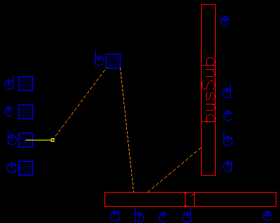

7
Using Assisted Routing Commands
This chapter describes the assisted routing commands.
Point to Point Routing
Point-to-point routing is available in Virtuoso Layout Suite XL and higher tiers.
The Point to Point command is an interactive routing command that automatically generates routing between two digitized points in a given cellview. The two specific locations can be the two click points. The two points can overlap a pin, instPin, pathSeg, path, existing wires or vias, or be in empty space. The Point to Point command uses the second digitized point to start the consecutive Point to Point command. A point-to-point route completes only when you double-click or press Enter.
Point-to-point routing is an acceleration of interactive wire editing when creating short local connections, while also allowing you to maintain tight control of the routing. Long connections can be broken down into several shorter point-to-point connections or can be completed automatically using the Automatic Routing command to create routing that is optimal in a global perspective.
The Point to Point routing command generates only orthogonal wires, which includes pathSegs and vias created in routes. Diagonal routing is not supported.
To create point-to-point wiring:
- Launch Layout XL or a higher tier of the layout suite.
-
From the design window, select Create – Wiring – Point to Point or click on the icon 
on the Create toolbar.
You are prompted to click at the first location. -
Press
F3to open the Point to Point Form. -
Specify a net name for the wire if you are starting from a point in open space.
When starting from a pin or shape that has connectivity, the net name of the pin or shape is automatically picked.
For more information about selecting the starting and ending targets, see Finishing Connections.
You can use the options on the context-sensitive menu to change the width of the wire to match the width of the starting pin. Right-click in the cellview to display the Point to Point Context-Sensitive Menu. See Setting Point to Point Wires to Match Pins.
You can also configure Point to Point settings using options in Point to Point and Automatic Section sections in the Wire Assistant. - If required, you can override the default width by specifying a new value in the Width field.
-
Use the Top and Bottom cyclic fields in the Routing column to limit the routing layers to a subset of the full range of metal and poly layers. Taper layers can be excluded or included in the routable layer range. However, if a layer, such as poly, is excluded and a poly pin is set up in such a way that the router cannot ascend to metal1 immediately at the pin through a metal1-poly via, the router will fail to connect to the poly pin. For more information about taper layers, see virtuosoDefaultTaper.
- Set up the valid and taper vias using the Vias buttons.
- Select the Connection Type. Exact Location creates routing between the digitized points. Shortest Connection creates routing as the shortest connection between the digitized points using any pre-existing wires.
-
In the cellview, click on a pin or a routing element such as a pathSeg, path, or via. Optionally, you can click in an empty area of the design. You are prompted to click at the next location.
A flightline is drawn from the clicked point to the closest target on the specified net.
 -
Click on subsequent points.
Routing is generated between consecutive digitized points.
After you digitize the second or more points:- The Net Name field in the Point to Point Form becomes uneditable.
- You can edit Routing Layers. If editing the layer limit results in making the previous point-to-point route invalid, the Point to Point command creates stacked vias between the previous click point and the valid routing layer.
-
To specify the ending location of the wire, double-click or press
Enter. The ending location can be a pin or a routing element such as a pathSeg, path, or via. Optionally, you can click in an empty area of the design. A highlighted line is displayed to show the connection between the first clicked point and the current pointer location.
This completes a point-to-point route. You are prompted to specify a new starting location for the Point to Point command.Ensure that the start and end points of the route are within the P&R boundary because routing is not allowed outside the P&R boundary.The Point to Point command automatically stops for the route if:- While routing an incomplete net, you tap a shape (pin/route) that completes the net.
- While routing a complete net, you tap a shape on the net.
- No net is being routed (starting from empty space or unassigned shapes) and you tap a shape on a complete net.
Routing paths are found in empty areas around objects with valid spacing rules. No pushing is performed to make room for routing. - To end the command, press Esc or click Cancel in the Point to Point Form.
minEndOfLine spacing in cases where the wire is floating and consequently forms an incomplete connection, as the data is still in the midst of changes.If the point-to-point router cannot complete a route and the Interactive Edit mode is set to Post-edit or Notify in the DRD Options form, the router forces a route creation with violations. The router also issues a warning message to indicate that there were violations and that you can run Verify – Design to view the markers for the violations. This enables you to analyze the problem areas where the router could not produce a clean route.
If the point-to-point router cannot complete a route and DRD Interactive Edit mode is set to Enforce, a warning message is issued to indicate if the router is stuck at the start or end point or pin or if there is insufficient space to complete routing.
Setting Point to Point Wires to Match Pins
You can use the options on the Use Width command on the Point to Point Context-Sensitive Menu to set point-to-point wire widths to match pins. The selected match pin width applies to all applicable routing layers of the current effective constraint group, where it does not violate the corresponding minWidth and maxWidth constraints. The width change is not implemented if it introduces a clearance violation.
The point-to-point pin matching option remains effective throughout the entire layout session. Point-to-point requires two clicked points. When the pin matching option is on, the width of the first pin selected is used. The object selected must be a pin, otherwise the width constraints in the current effective constraint group are applied.
Supporting Track-based Routing
Using the assisted routing commands, such as point to point and Finish Wire, you can now perform routing on track grids. To enable the assisted routing commands for track-based routing, the following conditions must be satisfied:
- Before starting a assisted routing command, select the Track Pattern option from the Snap Wire To drop-down list in the Wire Assistant.
- Each routing layer that has a track pattern must have a defined routing direction, which is either horizontal or vertical.
- Pin shapes must be on a track grid.
Finishing Connections
You can finish wires and buses manually by double-clicking or pressing Enter. The wire and the bus finish at the pointer location. In XL and higher tiers, the Auto Terminate check box, if selected in the Create Wire Form and the Create Bus Form, enables you to complete the creation of the wire or the bus, respectively, on the same net object with a single click.
To complete creating the wire or bus automatically, use the Finish Wire or Finish Bus commands on the Create Single Wire Context-Sensitive Menu and the Create Bus Context-Sensitive Menu, respectively.
To use the commands for finishing a wire or net, ensure that the technology file contains the minimum required information, such as complete foundry rules, and that the non-default or override constraint groups, if any, are specified in the virtuosoDefaultSetup or LEFDefaultRouteSpec) that defines the valid layers and the vias allowed for routing must be present in the technology file.
Finishing a Wire
Although Finish Wire is accessible during interactive routing, it is in fact automatic routing which makes the connections when you call Finish Wire. Unexpected results can occur when layer directions and/or pins are not optimized since automatic routing adheres to the defined layer direction; there is no such restriction during interactive routing. For example, you may be interactively routing in a direction opposite to the layer direction. When you invoke Finish Wire, the automatic routing switches (via up/down) to the opposite but defined layer direction.
The Finish Wire command is available in Layout XL and higher tiers on the Create Single Wire Context-Sensitive Menu, if you are creating a wire by using the Create Wire.
By using the Create Wire command, you can digitize critical parts of a wire manually, and then, run the Finish Wire command to finish the rest of the wire automatically.
The Finish Wire command requires a net, otherwise the corresponding commands are inactive. The Finish Wire command attempts to complete the connection of the current wire while the Create Wire command is running. The Finish Wire command accelerates interactive wire editing while completing short-distance wires from target pins or terminals, and at the same time, maintains control over routing by following the default rules. To complete long-distance wire connections automatically, use the Route – Automatic Routing command to create routing that is optimal within a global perspective.
For information about finishing a single or all the picked nets automatically instead of completing only a wire or a bus, see
To complete a wire connection automatically:
- Choose Create – Wiring – Wire.
- Start the wire creation from level 0 pin shapes or the visible level 1 instance pins (Instance Pins should be selected on the Display Options form) or from pre-existing wires.
-
Digitize some points of the wire.
If you move the pointer around, a connection that can be completed is displayed by a flightline. This is the connection from the pointer to a single destination pin, instPin, or it could be an existing pre-route belonging to the same net. - Right-click to display the Create Single Wire Context-Sensitive Menu
-
Select Finish Wire.
The Finish Wire command uses the pointer drag point as the starting point for finishing the connection. The command calls the point-to-point router to complete the wire connection. The control then returns to the Create Wire command and you can start creating new wires. -
Press
Escto finish creating a wire.
If the point-to-point router cannot complete a route and the Interactive Edit mode is set to Post-edit or Notify in the DRD Options form (Options – DRD Edit), the router forces a route creation with violations. The router also issues a warning message to indicate that there were violations and that you can run Verify – Design to view the markers for the violations. This enables you to analyze the problem areas where the router could not produce a clean route.
If the point-to-point router cannot complete a route and the DRD Interactive Edit mode is set to Enforce, a warning message is issued to indicate that the router is stuck at the start or end point or pin or if there is insufficient space to complete routing.
The Finish Wire command follows the default constraints and also complies with the overrides that have been set in the Create Wire Form or in the
Finishing a Trunk
The Finish Trunk command on the Create Bus and Create Wire context-sensitive menu automatically converts all the pathSegs except for the first and the last pathSeg into trunks, regardless of whether they are connected to a pin or not. The first and the last pathSeg is considered as a regular pathSeg if it is connected to a pin at one end and to a trunk at the other end. Else, it is converted to a trunk. The default bindkey for running the Finish Trunk command is 2. For more information, see
Finishing a Bus
The Finish Bus command is available in Layout XL and higher tiers on the Create Bus Context-Sensitive Menu, if you are creating a bus by using the Create Bus command. The command is available on the context-sensitive menu only after you digitize at least one point of the wire or the bus, or after you select the pins for the wire or bus creation.
By using the Create Bus command, you can digitize critical parts of a bus manually, and then, run the Finish Bus command to finish the rest of the bus automatically. The Finish Bus command attempts to complete the connection of the current bus while the the Create Bus command is running.
To complete a bus connection, you can use similar steps to use the Finish Bus command while creating a bus. For more information, see Finishing a Wire.
Return to top